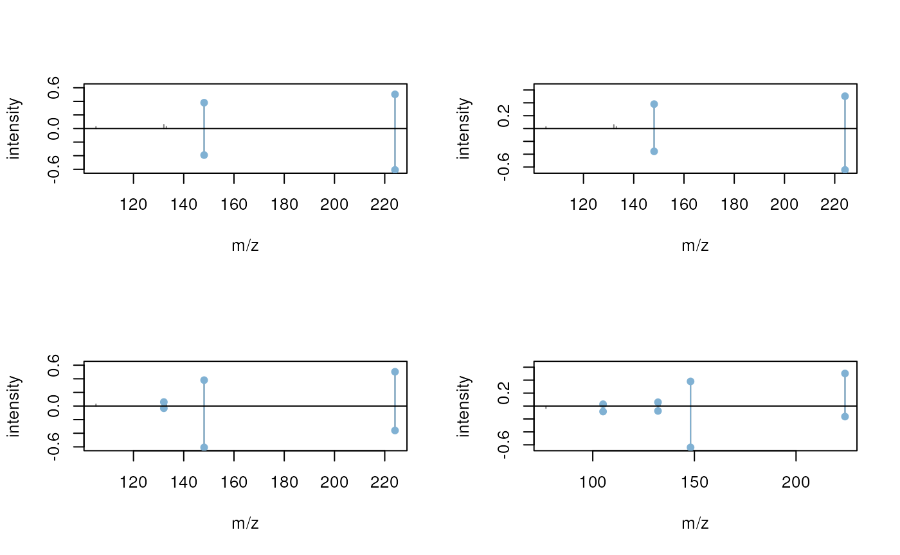

MS/MS Spectra Matching with the `MetaboAnnotation` Package
Johannes Rainer1, Michael Witting2
Source:vignettes/Spectra-matching-with-MetaboAnnotation.Rmd
Spectra-matching-with-MetaboAnnotation.RmdLast modified: 2024-05-17 15:09:18.976484
Compiled: Fri May 17 15:15:54 2024
Overview
Introduction
The Spectra package provides all the functionality
required for annotation and identification workflows for untargeted
LC-MS/MS data, but, while being very flexible and customizable, it might
be too cumbersome for beginners or analysts not accustomed with R. To
fill this gap we developed the MetaboAnnotation
package that builds upon Spectra and provides functions for
annotation of LC-MS and LC-MS/MS data sets tailored towards the less
experienced R user (Rainer et al.
2022).
Convenient spectra matching using MetaboAnnotation
In this example use case we match experimental MS2 spectra from a DDA experiment on a pesticide mix against reference spectra from MassBank. Below we load the experimental data file which is distributed via the msdata R package.
library(Spectra)
library(pander)
#' Load the pesticide mix data
fl <- system.file("TripleTOF-SWATH", "PestMix1_DDA.mzML", package = "msdata")
pest <- Spectra(fl)We next restrict the data set to MS2 spectra only and in addition clean these spectra by removing all peaks from a spectrum that have an intensity lower than 5% of the largest peak intensity of that spectrum. Finally, single-peak spectra are removed.
#' restrict to MS2 data and remove intensities with intensity lower 5%
pest <- filterMsLevel(pest, msLevel = 2L)
#' Remove peaks with an intensity below 5% or the spectra's BPC
low_int <- function(x, ...) {
x > max(x, na.rm = TRUE) * 0.05
}
pest <- filterIntensity(pest, intensity = low_int)
#' Remove peaks with a single peak
pest <- pest[lengths(pest) > 1]This leads to a data set consisting of 2451 spectra. We next connect
to a MassBank database (release 2023.11, running within this docker
image) and create a Spectra object representing that
data.
library(RMariaDB)
library(MsBackendMassbank)
#' Connect to the MassBank MySQL database
con <- dbConnect(MariaDB(), user = "massbank", dbname = "MassBank",
host = "localhost", pass = "massbank")
mbank <- Spectra(con, source = MsBackendMassbankSql())Alternatively, MassBank spectral libraries are also provided through Bioconductor’s AnnotationHub and can be conveniently loaded from there. The code below first loads the AnnotationHub resource and then loads the data for one MassBank release. The database will be cached locally, avoiding thus to re-download the data for future use.
#' Load the AnnotationHub resource
library(AnnotationHub)
ah <- AnnotationHub()
#' List available MassBank release
query(ah, "MassBank")## AnnotationHub with 6 records
## # snapshotDate(): 2024-04-29
## # $dataprovider: MassBank
## # $species: NA
## # $rdataclass: CompDb
## # additional mcols(): taxonomyid, genome, description,
## # coordinate_1_based, maintainer, rdatadateadded, preparerclass, tags,
## # rdatapath, sourceurl, sourcetype
## # retrieve records with, e.g., 'object[["AH107048"]]'
##
## title
## AH107048 | MassBank CompDb for release 2021.03
## AH107049 | MassBank CompDb for release 2022.06
## AH111334 | MassBank CompDb for release 2022.12.1
## AH116164 | MassBank CompDb for release 2023.06
## AH116165 | MassBank CompDb for release 2023.09
## AH116166 | MassBank CompDb for release 2023.11
#' Load the MassBank release 2023.11 and get a Spectra object
mbank <- ah[["AH116166"]] |>
Spectra()It is suggested to apply the same processing applied to the query spectra also to the target (reference) spectra. Thus we below filter also the reference spectra from MassBank with the same intensity filter.
#' Remove low intensity peaks and subsequently remove
#' spectra with less than 2 peaks
mbank <- filterIntensity(mbank, intensity = low_int)
mbank <- mbank[lengths(mbank) > 1]We could now directly calculate similarities between the 2451
experimental (query) MS2 spectra and the 103525 MassBank reference
(target) spectra using the compareSpectra() method, but
this would be computationally very intense because a similarity score
would be calculated between each query and each target spectrum. As
alternative we use here the matchSpectra() function from
the MetaboAnnotation
package that allows to restrict similarity calculations between query
and target spectra with similar m/z of their precursor ion (or
considering also a similar retention time if available for reference
spectra).
Below we create a CompareSpectraParam object setting
parameter requirePrecursor = TRUE (to restrict similarity
calculations only to query and target spectra with a similar precursor
m/z) and ppm = 10 (m/z difference between
the query and target precursor has to be within 10 ppm). Parameter
THRESHFUN enables to define a threshold function
that defines which spectra are considered matching. With the function
used below only MS2 spectra with a similarity (calculated with the
default dotproduct function) larger or equal to 0.8 are
considered matching.
library(MetaboAnnotation)
prm <- CompareSpectraParam(ppm = 10, requirePrecursor = TRUE,
THRESHFUN = function(x) which(x >= 0.8))We next call matchSpectra() with this parameter object
and pass pest and mbank as query and target
Spectra, respectively.
mtch <- matchSpectra(pest, mbank, param = prm)
mtch## Object of class MatchedSpectra
## Total number of matches: 113
## Number of query objects: 2451 (39 matched)
## Number of target objects: 103525 (69 matched)As a result we get a MatchedSpectra object that contains
the query and target spectra as well as the matching result (i.e. the
information which query spectrum matches with which target spectrum
based on what similarity score). We can use the query() and
target() functions to access the query and target
Spectra objects and matches() to extract the
matching information. Below we display the first 6 rows of that
matrix.
## query_idx target_idx score
## 1 433 97386 0.9471924
## 2 433 97387 0.9258791
## 3 433 97388 0.8188538
## 4 435 97386 0.9745761
## 5 435 97387 0.8573438
## 6 493 68124 0.9089015Functions whichQuery() and whichTarget()
return the (unique) indices of the query and target spectra that could
be matched.
whichQuery(mtch)## [1] 433 435 493 496 497 571 682 685 686 805 807 809 810 819 829
## [16] 983 1095 1127 1266 1281 1283 1454 1457 1480 1706 1828 1830 1834 1839 1874
## [31] 1882 1901 1906 2038 2040 2043 2050 2124 2309As we can see only few of the query spectra (39 of the 2451 spectra)
could be matched. This is in part because for a large proportion spectra
in MassBank no precursor m/z is available and with
requirePrecursor = TRUE these are not considered in the
similarity calculation. Setting requirePrecursor = FALSE
would calculate a similarity between all spectra (even those with
missing precursor information) but calculations would take much
longer.
sum(is.na(precursorMz(mbank)))## [1] 23519The MatchedSpectra object inherits much of the
functionality of a Spectra object. The
spectraVariables() function returns for example all the
available spectra variables, from both the query as well as the
target Spectra. The variable names of the latter are
prefixed with target_ to discriminate them from the
variable names of the query.
spectraVariables(mtch)## [1] "msLevel" "rtime"
## [3] "acquisitionNum" "scanIndex"
## [5] "dataStorage" "dataOrigin"
## [7] "centroided" "smoothed"
## [9] "polarity" "precScanNum"
## [11] "precursorMz" "precursorIntensity"
## [13] "precursorCharge" "collisionEnergy"
## [15] "isolationWindowLowerMz" "isolationWindowTargetMz"
## [17] "isolationWindowUpperMz" "peaksCount"
## [19] "totIonCurrent" "basePeakMZ"
## [21] "basePeakIntensity" "ionisationEnergy"
## [23] "lowMZ" "highMZ"
## [25] "mergedScan" "mergedResultScanNum"
## [27] "mergedResultStartScanNum" "mergedResultEndScanNum"
## [29] "injectionTime" "filterString"
## [31] "spectrumId" "ionMobilityDriftTime"
## [33] "scanWindowLowerLimit" "scanWindowUpperLimit"
## [35] ".original_query_index" "target_msLevel"
## [37] "target_rtime" "target_acquisitionNum"
## [39] "target_scanIndex" "target_dataStorage"
## [41] "target_dataOrigin" "target_centroided"
## [43] "target_smoothed" "target_polarity"
## [45] "target_precScanNum" "target_precursorMz"
## [47] "target_precursorIntensity" "target_precursorCharge"
## [49] "target_collisionEnergy" "target_isolationWindowLowerMz"
## [51] "target_isolationWindowTargetMz" "target_isolationWindowUpperMz"
## [53] "target_compound_id" "target_formula"
## [55] "target_exactmass" "target_smiles"
## [57] "target_inchi" "target_inchikey"
## [59] "target_cas" "target_pubchem"
## [61] "target_name" "target_spectrum_id"
## [63] "target_spectrum_name" "target_date"
## [65] "target_authors" "target_license"
## [67] "target_copyright" "target_publication"
## [69] "target_splash" "target_precursorMz_text"
## [71] "target_adduct" "target_ionization"
## [73] "target_ionization_voltage" "target_fragmentation_mode"
## [75] "target_collisionEnergy_text" "target_instrument"
## [77] "target_instrument_type" "target_original_spectrum_id"
## [79] "target_predicted" "target_msms_mz_range_min"
## [81] "target_msms_mz_range_max" "target_synonym"
## [83] "score"We can access individual spectra variables using $ and
the variable name, or multiple variables with the
spectraData() function. Below we extract the retention
time, the precursor m/z of the query spectrum, the precursor
m/z of the target spectrum as well as the similarity score from
the object using the spectraData() function.
spectraData(mtch, c("rtime", "precursorMz", "target_precursorMz", "score"))## DataFrame with 2525 rows and 4 columns
## rtime precursorMz target_precursorMz score
## <numeric> <numeric> <numeric> <numeric>
## 1 7.216 137.9639 NA NA
## 2 13.146 56.9419 NA NA
## 3 13.556 89.9449 NA NA
## 4 23.085 207.0294 NA NA
## 5 27.385 121.0990 NA NA
## ... ... ... ... ...
## 2521 895.182 137.9850 NA NA
## 2522 895.472 56.0495 NA NA
## 2523 896.252 142.9611 NA NA
## 2524 896.662 53.0129 NA NA
## 2525 898.602 91.5022 NA NAThe returned DataFrame contains the matching information
for the full data set, i.e. of each query spectrum and hence, returns
NA values for query spectra that could not be matched with
a target spectrum. Note also that query spectra matching multiple target
spectra are represented by multiple rows (one for each matching target
spectrum).
Here we’re only interested in query spectra matching at least one
target spectrum and hence subset the matching result to these using the
whichQuery() function.
mtch <- mtch[whichQuery(mtch)]
mtch## Object of class MatchedSpectra
## Total number of matches: 113
## Number of query objects: 39 (39 matched)
## Number of target objects: 103525 (69 matched)Subsetting of MatchedSpectra is always relative to the
query, i.e. mtch[4] would subset the object to the matching
results for the 4th query spectrum.
We now extract the matching information on the data subset:
spectraData(mtch, c("rtime", "precursorMz", "target_precursorMz", "score"))## DataFrame with 113 rows and 4 columns
## rtime precursorMz target_precursorMz score
## <numeric> <numeric> <numeric> <numeric>
## 1 326.703 235.143 235.144 0.947192
## 2 326.703 235.143 235.144 0.925879
## 3 326.703 235.143 235.144 0.818854
## 4 327.113 235.144 235.144 0.974576
## 5 327.113 235.144 235.144 0.857344
## ... ... ... ... ...
## 109 565.646 425.214 425.215 0.947080
## 110 565.646 425.214 425.215 0.853670
## 111 570.825 373.040 373.041 0.879824
## 112 596.584 313.039 313.039 0.818335
## 113 873.144 136.112 136.112 0.804731We can also return the compound names for the matching spectra. Depending on whether the annotations are retrieved from the MassBank MySQL database or the version from AnnotationHub we need to use a different spectra variable name for the compound name.
#' Get the name of the column containing the compound name
name_col <- intersect(spectraVariables(mtch),
c("target_name", "target_compound_name"))
pandoc.table(style = "rmarkdown",
as.data.frame(spectraData(mtch, c("rtime", name_col, "score"))))| rtime | target_name | score |
|---|---|---|
| 326.7 | Lenacil | 0.9472 |
| 326.7 | Lenacil | 0.9259 |
| 326.7 | Lenacil | 0.8189 |
| 327.1 | Lenacil | 0.9746 |
| 327.1 | Lenacil | 0.8573 |
| 338.5 | Azaconazole | 0.9089 |
| 338.5 | Azaconazole | 0.8028 |
| 338.9 | Azaconazole | 0.9226 |
| 339.3 | Azaconazole | 0.9168 |
| 353.5 | Fosthiazate | 0.9396 |
| 361.7 | Azaconazole | 0.9157 |
| 362.3 | Azaconazole | 0.9083 |
| 362.6 | Azaconazole | 0.906 |
| 377.7 | Triphenylphosphine oxide | 0.9148 |
| 377.7 | Triphenylphosphine oxide | 0.8734 |
| 377.7 | triphenylphosphineoxide | 0.8809 |
| 377.7 | triphenylphosphineoxide | 0.9269 |
| 377.7 | Triphenylphosphine oxide | 0.8352 |
| 378.5 | Dimethachlor | 0.8459 |
| 378.5 | Dimethachlor | 0.8423 |
| 378.9 | Dimethachlor | 0.8784 |
| 378.9 | Dimethachlor | 0.8729 |
| 378.9 | Dimethachlor | 0.9108 |
| 378.9 | Dimethachlor | 0.8111 |
| 379 | Triphenylphosphine oxide | 0.8393 |
| 379 | Triphenylphosphine oxide | 0.8555 |
| 379 | triphenylphosphineoxide | 0.8498 |
| 379 | triphenylphosphineoxide | 0.8962 |
| 379 | Triphenylphosphine oxide | 0.8577 |
| 382 | Dimethachlor | 0.8823 |
| 382 | Dimethachlor | 0.8785 |
| 382 | Dimethachlor | 0.9024 |
| 382 | Dimethachlor | 0.8017 |
| 384.5 | Dimethachlor | 0.8924 |
| 384.5 | Dimethachlor | 0.8038 |
| 384.5 | Dimethachlor | 0.8879 |
| 384.5 | Dimethachlor | 0.9096 |
| 405.1 | Cyproconazole | 0.8112 |
| 405.1 | Cyproconazole | 0.8098 |
| 405.1 | Cyproconazole | 0.8109 |
| 414.6 | Tris(1-chloro-2-propyl) phosphate | 0.8293 |
| 414.6 | Tris(1-chloro-2-propyl) phosphate | 0.8132 |
| 414.6 | Tris(1-chloro-2-propyl)phosphate | 0.8901 |
| 414.6 | Tris(1-chloro-2-propyl)phosphate | 0.8457 |
| 414.6 | Tris(1-chloro-2-propyl)phosphate | 0.9992 |
| 419.8 | Fenamiphos | 0.8033 |
| 431.5 | Tris(1-chloro-2-propyl) phosphate | 0.8146 |
| 431.5 | Tris(1-chloro-2-propyl)phosphate | 0.9011 |
| 435 | Fluopicolide | 0.8542 |
| 435.4 | Fluopicolide | 0.8085 |
| 452.9 | Flufenacet | 0.8079 |
| 452.9 | Flufenacet | 0.8949 |
| 452.9 | Flufenacet | 0.8898 |
| 452.9 | Flufenacet | 0.8909 |
| 452.9 | Flufenacet | 0.9051 |
| 453.3 | Flufenacet | 0.8634 |
| 453.3 | Flufenacet | 0.9009 |
| 453.3 | Flufenacet | 0.9508 |
| 453.3 | Flufenacet | 0.9487 |
| 453.3 | Flufenacet | 0.8492 |
| 455.3 | Dimoxystrobin | 0.8179 |
| 490.7 | Triisobutyl phosphate | 0.8834 |
| 490.7 | Triisobutyl phosphate | 0.8854 |
| 490.7 | Triisobutyl phosphate | 0.8253 |
| 490.7 | Triisobutyl phosphate | 0.8514 |
| 490.7 | Tributyl phosphate | 0.9988 |
| 490.7 | Tributyl phosphate | 0.9891 |
| 490.7 | Tributyl phosphate | 0.944 |
| 490.7 | Tributyl phosphate | 0.8639 |
| 490.7 | Triisobutyl phosphate | 0.8746 |
| 490.7 | Triisobutyl phosphate | 0.9747 |
| 490.7 | Triisobutyl phosphate | 0.9926 |
| 490.7 | Triisobutyl phosphate | 0.961 |
| 490.7 | Triisobutyl phosphate | 0.8165 |
| 506.7 | Didecyl-dimethylammonium | 0.9766 |
| 506.7 | Didecyl-dimethylammonium | 0.9109 |
| 506.7 | Didecyl-dimethylammonium | 0.9941 |
| 506.8 | Diflufenican | 0.8661 |
| 506.8 | Diflufenican | 0.877 |
| 506.8 | Diflufenican | 0.9272 |
| 506.8 | Diflufenican | 0.814 |
| 506.8 | Diflufenican | 0.826 |
| 507.3 | Diflufenican | 0.8385 |
| 507.3 | Diflufenican | 0.843 |
| 507.3 | Diflufenican | 0.9183 |
| 507.3 | Diflufenican | 0.9113 |
| 507.7 | Diflufenican | 0.8424 |
| 507.7 | Diflufenican | 0.8732 |
| 507.7 | Diflufenican | 0.9041 |
| 507.7 | Diflufenican | 0.8026 |
| 511 | Diflufenican | 0.835 |
| 512.1 | Diflufenican | 0.8813 |
| 512.1 | Diflufenican | 0.8439 |
| 512.1 | Diflufenican | 0.8797 |
| 512.1 | Diflufenican | 0.8105 |
| 512.1 | Diflufenican | 0.8389 |
| 526.4 | Dibutyl phthalate | 0.87 |
| 526.4 | Dibutyl phthalate | 0.9468 |
| 526.4 | Diisobutyl phthalate | 0.8584 |
| 526.4 | Diisobutyl phthalate | 0.9351 |
| 526.4 | Diisobutyl phthalate | 0.8683 |
| 527.4 | Dibutyl phthalate | 0.8506 |
| 527.4 | Diisobutyl phthalate | 0.8409 |
| 527.4 | Dibutyl phthalate | 0.818 |
| 563.6 | Tributyl acetylcitrate | 0.8066 |
| 564.6 | Tributyl acetylcitrate | 0.9893 |
| 564.6 | Tributyl acetylcitrate | 0.9963 |
| 565.6 | Tributyl acetylcitrate | 0.9506 |
| 565.6 | Tributyl acetylcitrate | 0.9471 |
| 565.6 | Tributyl acetylcitrate | 0.8537 |
| 570.8 | Proquinazid | 0.8798 |
| 596.6 | Spirodiclofen-enol | 0.8183 |
| 873.1 | Trimethylphenylammonium | 0.8047 |
We can also visually inspect the matches using mirror plots. Below we
create mirror plots between the first query spectrum with all matching
reference spectra. For better visualization we scale the peak
intensities of all spectra to a total intensity sum of one by setting
scalePeaks = TRUE.
#' plot the results for the first query spectrum
plotSpectraMirror(mtch[1], ppm = 10, scalePeaks = TRUE)Spectra matching results could also be manually, and interactively,
evaluated and validated with the validateMatchedSpectra()
function.
Summarizing, the matchSpectra() function enables thus a
convenient spectra matching between MS data represented as
Spectra objects. As a result, a MatchedSpectra
object is returned that, in addition to the matching results, contains
also the query and target spectra. Pre-filtering the spectra prior to
the actual spectra similarity calculation can reduce the running time of
a matchSpectra() call but might also miss some potential
matches. Note that in addition to the precursor m/z-based
pre-filter also retention time pre-filtering would be available (see
?matchSpectra for more information). Also, a more advanced
matching approach would be available with the
MatchForwardReverseParam that calculates in addition to the
forward score also a reverse similarity for each
match.
MS2 spectra matching in an xcms workflow
In LC-MS/MS-based untargeted metabolomics (or small compound mass
spectrometry experiments in general) quantification of the compounds is
performed in MS1 while the MS2 data is used for identification of the
features. Quantification of MS1 data requires a chromatographic peak
detection step which can be performed using the functionality from the
xcms
package. Below we load thus the xcms package and import the
full MS data using the readMsExperiment function.
library(xcms)
library(MsExperiment)
pest_all <- readMsExperiment(fl)We next perform the chromatographic peak detection using the
centWave algorithm (see the LC-MS/MS data analysis with
xcms vignette from the xcms package for details on the
chromatographic peak detection settings).
cwp <- CentWaveParam(snthresh = 5, noise = 100, ppm = 10,
peakwidth = c(3, 30))
pest_all <- findChromPeaks(pest_all, param = cwp)In total 99 chromatographic peaks have been identified. Below we display the first 6 of them.
head(chromPeaks(pest_all))## mz mzmin mzmax rt rtmin rtmax into intb
## CP01 142.9926 142.9921 142.9931 130.615 125.856 134.241 1113.8028 1106.229
## CP02 221.0918 221.0906 221.0925 240.897 236.657 246.984 756.6935 744.779
## CP03 220.0985 220.0978 220.0988 240.897 237.187 246.327 2060.5921 2052.549
## CP04 219.0957 219.0950 219.0962 241.018 236.253 246.327 15172.6662 15133.811
## CP05 153.0659 153.0655 153.0663 330.591 325.373 334.400 2148.7134 2141.943
## CP06 235.1447 235.1441 235.1454 330.591 326.431 334.400 2836.2675 2829.627
## maxo sn sample
## CP01 346.7006 102 1
## CP02 212.5239 21 1
## CP03 585.3036 151 1
## CP04 4877.1162 367 1
## CP05 784.9196 114 1
## CP06 1006.9720 110 1We can now extract all MS2 spectra for each chromatographic peak with
the chromPeakSpectra() function. This function identifies
all MS2 spectra recorded by the instrument with a retention time within
the retention time and with a precursor m/z within the m/z
boundaries of the chromatographic peak. By setting
return.type = "Spectra" we ensure that the data is being
returned in the newer Spectra format hence enabling the
simplified spectra matching with the functionality presented here.
pest_ms2 <- chromPeakSpectra(pest_all, return.type = "Spectra")
pest_ms2## MSn data (Spectra) with 158 spectra in a MsBackendMzR backend:
## msLevel rtime scanIndex
## <integer> <numeric> <integer>
## 1 2 128.237 1000
## 2 2 128.737 1008
## 3 2 129.857 1023
## 4 2 237.869 1812
## 5 2 241.299 1846
## ... ... ... ...
## 154 2 575.255 5115
## 155 2 596.584 5272
## 156 2 592.424 5236
## 157 2 596.054 5266
## 158 2 873.714 7344
## ... 34 more variables/columns.
##
## file(s):
## PestMix1_DDA.mzML
## Processing:
## Filter: select MS level(s) 2 [Fri May 17 15:17:11 2024]
## Merge 1 Spectra into one [Fri May 17 15:17:11 2024]Spectra variable peak_id contains the identified of the
chromatographic peak (i.e. its row name in chromPeaks).
pest_ms2$peak_id## [1] "CP01" "CP01" "CP01" "CP04" "CP04" "CP05" "CP05" "CP06" "CP06" "CP08"
## [11] "CP08" "CP11" "CP11" "CP12" "CP12" "CP13" "CP13" "CP13" "CP13" "CP14"
## [21] "CP14" "CP14" "CP14" "CP18" "CP22" "CP22" "CP22" "CP22" "CP22" "CP25"
## [31] "CP25" "CP25" "CP25" "CP25" "CP26" "CP26" "CP26" "CP26" "CP26" "CP26"
## [41] "CP33" "CP33" "CP34" "CP34" "CP34" "CP34" "CP34" "CP35" "CP35" "CP35"
## [51] "CP35" "CP35" "CP36" "CP41" "CP41" "CP41" "CP42" "CP42" "CP42" "CP42"
## [61] "CP42" "CP44" "CP44" "CP46" "CP46" "CP46" "CP46" "CP47" "CP47" "CP47"
## [71] "CP48" "CP48" "CP48" "CP50" "CP51" "CP51" "CP51" "CP52" "CP52" "CP52"
## [81] "CP53" "CP53" "CP53" "CP53" "CP53" "CP57" "CP57" "CP57" "CP57" "CP57"
## [91] "CP59" "CP59" "CP60" "CP60" "CP61" "CP61" "CP63" "CP63" "CP63" "CP63"
## [101] "CP64" "CP64" "CP64" "CP64" "CP64" "CP65" "CP66" "CP66" "CP66" "CP66"
## [111] "CP67" "CP67" "CP67" "CP69" "CP69" "CP69" "CP71" "CP71" "CP71" "CP71"
## [121] "CP72" "CP72" "CP72" "CP73" "CP81" "CP81" "CP81" "CP81" "CP82" "CP82"
## [131] "CP82" "CP85" "CP85" "CP88" "CP88" "CP89" "CP89" "CP89" "CP90" "CP90"
## [141] "CP90" "CP91" "CP91" "CP91" "CP93" "CP93" "CP93" "CP93" "CP93" "CP93"
## [151] "CP94" "CP94" "CP94" "CP94" "CP95" "CP98" "CP98" "CP99"We next, like in the previous section, clean up the spectra removing peaks with an intensity below 5% of the largest peak intensity per spectrum and removing spectra with a single peak.
#' Remove peaks with an intensity below 5%
pest_ms2 <- filterIntensity(pest_ms2, intensity = low_int)
#' Remove peaks with a single peak
pest_ms2 <- pest_ms2[lengths(pest_ms2) > 1]We in addition also scale the peak intensities per spectrum using the
scalePeaks() function. While most spectra similarity
scoring algorithms are independent of absolute peak intensities, peak
scaling will improve the graphical visualization of results. We perform
the peak scaling to both the experimental as well as the reference
spectra in MassBank.
pest_ms2 <- scalePeaks(pest_ms2)
mbank <- scalePeaks(mbank)Next we perform the spectra matching with the same parameters as in the previous section.
pest_match <- matchSpectra(pest_ms2, mbank, param = prm)
pest_match## Object of class MatchedSpectra
## Total number of matches: 33
## Number of query objects: 155 (12 matched)
## Number of target objects: 103525 (26 matched)Again, we restrict the MatchedSpectra to query spectra
which could be matched.
pest_match <- pest_match[whichQuery(pest_match)]The table below lists the compound names of matching spectra for the chromatographic peaks.
#' Get the name of the column containing the compound name
name_col <- intersect(spectraVariables(pest_match),
c("target_name", "target_compound_name"))
pandoc.table(
style = "rmarkdown",
as.data.frame(spectraData(pest_match, c("peak_id", "rtime", name_col))))| peak_id | rtime | target_name |
|---|---|---|
| CP06 | 327.1 | Lenacil |
| CP06 | 327.1 | Lenacil |
| CP18 | 362.6 | Azaconazole |
| CP25 | 382 | Dimethachlor |
| CP25 | 382 | Dimethachlor |
| CP25 | 382 | Dimethachlor |
| CP25 | 382 | Dimethachlor |
| CP25 | 384.5 | Dimethachlor |
| CP25 | 384.5 | Dimethachlor |
| CP25 | 384.5 | Dimethachlor |
| CP25 | 384.5 | Dimethachlor |
| CP42 | 405.1 | Cyproconazole |
| CP42 | 405.1 | Cyproconazole |
| CP42 | 405.1 | Cyproconazole |
| CP57 | 435.4 | Fluopicolide |
| CP67 | 452.9 | Flufenacet |
| CP67 | 452.9 | Flufenacet |
| CP67 | 452.9 | Flufenacet |
| CP67 | 452.9 | Flufenacet |
| CP67 | 452.9 | Flufenacet |
| CP67 | 453.3 | Flufenacet |
| CP67 | 453.3 | Flufenacet |
| CP67 | 453.3 | Flufenacet |
| CP67 | 453.3 | Flufenacet |
| CP67 | 453.3 | Flufenacet |
| CP72 | 455.3 | Dimoxystrobin |
| CP88 | 511 | Diflufenican |
| CP88 | 512.1 | Diflufenican |
| CP88 | 512.1 | Diflufenican |
| CP88 | 512.1 | Diflufenican |
| CP88 | 512.1 | Diflufenican |
| CP88 | 512.1 | Diflufenican |
| CP95 | 596.6 | Spirodiclofen-enol |
We can also directly plot matching (query and target) spectra against
each other using the plotSpectraMirror() function
subsetting the MatchedSpectra object to the query spectrum
of interest. Below we plot the third query spectrum against all of its
matching target spectra.
plotSpectraMirror(pest_match[3])
Summarizing, with the chromPeakSpectra() and the
featureSpectra() functions, xcms allows to
return MS data as Spectra objects which enables, as shown
in this simple example, to perform MS2 spectra matching using the
Spectra as well as the MetaboAnnotation
packages hence simplifying MS/MS-based annotation of LC-MS features from
xcms.
Session information
## R version 4.4.0 (2024-04-24)
## Platform: x86_64-pc-linux-gnu
## Running under: Ubuntu 22.04.4 LTS
##
## Matrix products: default
## BLAS: /usr/lib/x86_64-linux-gnu/openblas-pthread/libblas.so.3
## LAPACK: /usr/lib/x86_64-linux-gnu/openblas-pthread/libopenblasp-r0.3.20.so; LAPACK version 3.10.0
##
## locale:
## [1] LC_CTYPE=en_US.UTF-8 LC_NUMERIC=C
## [3] LC_TIME=en_US.UTF-8 LC_COLLATE=en_US.UTF-8
## [5] LC_MONETARY=en_US.UTF-8 LC_MESSAGES=en_US.UTF-8
## [7] LC_PAPER=en_US.UTF-8 LC_NAME=C
## [9] LC_ADDRESS=C LC_TELEPHONE=C
## [11] LC_MEASUREMENT=en_US.UTF-8 LC_IDENTIFICATION=C
##
## time zone: Etc/UTC
## tzcode source: system (glibc)
##
## attached base packages:
## [1] stats4 stats graphics grDevices utils datasets methods
## [8] base
##
## other attached packages:
## [1] MsExperiment_1.6.0 xcms_4.2.1 MetaboAnnotation_1.8.1
## [4] CompoundDb_1.8.0 AnnotationFilter_1.28.0 AnnotationHub_3.12.0
## [7] BiocFileCache_2.12.0 dbplyr_2.5.0 MsBackendMassbank_1.12.0
## [10] RMariaDB_1.3.1 pander_0.6.5 Spectra_1.14.0
## [13] ProtGenerics_1.36.0 S4Vectors_0.42.0 BiocGenerics_0.50.0
## [16] BiocParallel_1.38.0 BiocStyle_2.32.0
##
## loaded via a namespace (and not attached):
## [1] RColorBrewer_1.1-3 jsonlite_1.8.8
## [3] MultiAssayExperiment_1.30.1 magrittr_2.0.3
## [5] MALDIquant_1.22.2 rmarkdown_2.27
## [7] fs_1.6.4 zlibbioc_1.50.0
## [9] ragg_1.3.2 vctrs_0.6.5
## [11] memoise_2.0.1 RCurl_1.98-1.14
## [13] base64enc_0.1-3 progress_1.2.3
## [15] htmltools_0.5.8.1 S4Arrays_1.4.0
## [17] curl_5.2.1 SparseArray_1.4.3
## [19] mzID_1.42.0 sass_0.4.9
## [21] bslib_0.7.0 htmlwidgets_1.6.4
## [23] desc_1.4.3 plyr_1.8.9
## [25] impute_1.78.0 lubridate_1.9.3
## [27] cachem_1.1.0 igraph_2.0.3
## [29] iterators_1.0.14 mime_0.12
## [31] lifecycle_1.0.4 pkgconfig_2.0.3
## [33] Matrix_1.7-0 R6_2.5.1
## [35] fastmap_1.2.0 GenomeInfoDbData_1.2.12
## [37] MatrixGenerics_1.16.0 clue_0.3-65
## [39] digest_0.6.35 pcaMethods_1.96.0
## [41] rsvg_2.6.0 colorspace_2.1-0
## [43] AnnotationDbi_1.66.0 textshaping_0.3.7
## [45] GenomicRanges_1.56.0 RSQLite_2.3.6
## [47] filelock_1.0.3 fansi_1.0.6
## [49] timechange_0.3.0 httr_1.4.7
## [51] abind_1.4-5 compiler_4.4.0
## [53] doParallel_1.0.17 bit64_4.0.5
## [55] withr_3.0.0 DBI_1.2.2
## [57] highr_0.10 MASS_7.3-60.2
## [59] ChemmineR_3.56.0 rappdirs_0.3.3
## [61] DelayedArray_0.30.1 rjson_0.2.21
## [63] mzR_2.38.0 tools_4.4.0
## [65] PSMatch_1.8.0 glue_1.7.0
## [67] QFeatures_1.14.1 grid_4.4.0
## [69] cluster_2.1.6 reshape2_1.4.4
## [71] generics_0.1.3 gtable_0.3.5
## [73] preprocessCore_1.66.0 tidyr_1.3.1
## [75] hms_1.1.3 MetaboCoreUtils_1.12.0
## [77] xml2_1.3.6 utf8_1.2.4
## [79] XVector_0.44.0 foreach_1.5.2
## [81] BiocVersion_3.19.1 pillar_1.9.0
## [83] stringr_1.5.1 limma_3.60.0
## [85] dplyr_1.1.4 lattice_0.22-6
## [87] bit_4.0.5 tidyselect_1.2.1
## [89] Biostrings_2.72.0 knitr_1.46
## [91] gridExtra_2.3 IRanges_2.38.0
## [93] SummarizedExperiment_1.34.0 xfun_0.44
## [95] Biobase_2.64.0 statmod_1.5.0
## [97] MSnbase_2.30.1 matrixStats_1.3.0
## [99] DT_0.33 stringi_1.8.4
## [101] UCSC.utils_1.0.0 lazyeval_0.2.2
## [103] yaml_2.3.8 evaluate_0.23
## [105] codetools_0.2-20 MsCoreUtils_1.16.0
## [107] tibble_3.2.1 BiocManager_1.30.23
## [109] affyio_1.74.0 cli_3.6.2
## [111] systemfonts_1.1.0 munsell_0.5.1
## [113] jquerylib_0.1.4 MassSpecWavelet_1.70.0
## [115] Rcpp_1.0.12 GenomeInfoDb_1.40.0
## [117] png_0.1-8 XML_3.99-0.16.1
## [119] parallel_4.4.0 pkgdown_2.0.9
## [121] ggplot2_3.5.1 blob_1.2.4
## [123] prettyunits_1.2.0 bitops_1.0-7
## [125] MsFeatures_1.12.0 affy_1.82.0
## [127] scales_1.3.0 ncdf4_1.22
## [129] purrr_1.0.2 crayon_1.5.2
## [131] rlang_1.1.3 vsn_3.72.0
## [133] KEGGREST_1.44.0